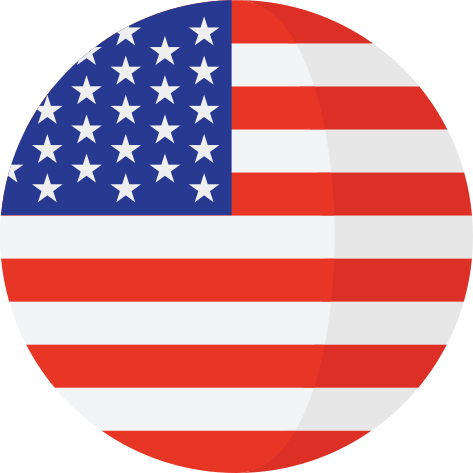

<ion-fab vertical="bottom" horizontal="end" slot="fixed" >
  <ion-fab-button class="button-color" >    
    
  </ion-fab-button>


  <ion-fab-list side="start">
    <ion-fab-button class="button-color" (click)="select('pt')">
      
    </ion-fab-button>
    <ion-fab-button class="button-color" (click)="select('en')">
      
    </ion-fab-button>
  </ion-fab-list>
</ion-fab>